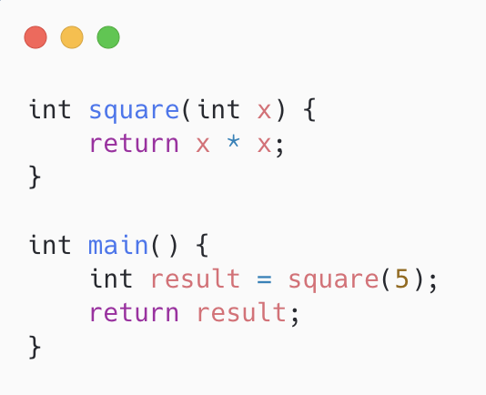

What Happens When You Run Your Code
You hit run. A single, quiet, keyboard shortcut act of faith. And a fraction of a second later, text appears on your screen. You don't think about it. You just accept it, the way you accept that pressing a light switch makes light happen.
But behind that fraction of a second is an absurd amount of machinery. Parsers arguing with your syntax, optimizers rewriting your code, and eventually some electrons in a silicon wafer being bullied into doing exactly what you asked, even when what you asked was for(int i=0;i<=n;i++) arr[i].
Let's walk through it.
Step 0: You, Full of Hope
You write something like this:

At this point your code is just a .cpp file (a text file). To the computer, right now, it means nothing. It's a string. Your CPU does not know what int is. It does not care about square.
Step 1: Lexing >> Turning Sentences into LEGO Bricks
The first thing the compiler does is called lexical analysis, or "tokenizing" if you want to sound cool at a hackathon. The lexer reads your source code character by character and groups them into meaningful chunks called tokens.
So int square(int x) { becomes:
This is the compiler equivalent of hearing someone speak and going "okay, that was a noun, that was a verb…." It has no idea yet what any of it means. it's just sorting your alphabet soup into labeled words.
Fun fact: if you've ever gotten a mysterious unexpected token error, this is the stage silently judging you before the parser even gets a chance to.
Step 2: Parsing >> Giving the LEGO Bricks a Family Tree
Next comes the parser, which takes that stream of tokens and builds a tree structure called an Abstract Syntax Tree (AST). Basically a family diagram of your code, where every operation knows who its parents and children are.
This is also where the parser enforces grammar. Forget a closing brace? The parser doesn't gently suggest you fix it. it throws a tantrum with a red squiggly line and a cryptic error pointing at line 47 when your actual mistake is on line 12. Parsers have commitment issues. They blame the wrong line all the time.
Step 3: Semantic Analysis >> "Sure, It's Grammatically Fine, But Does It Make Sense?"
Your code can be syntactically perfect and still be nonsense, like saying "the colorless green idea slept furiously." This is where semantic analysis comes in: type checking, scope resolution, making sure you didn't try to add a string to a struct and expect the universe not to notice.
This is also the stage that catches things like:
int x = "hello"; // absolutely not, sirStep 4: Intermediate Representation >> The Great Flattening
Now the compiler translates your AST into an Intermediate Representation (IR), a lower-level, simplified form that's easier to analyze and optimize, and not tied to any specific CPU. Think LLVM IR, if you've heard of it (and if you're the kind of person reading a compilers blog, you probably have).
define i32 @square(i32 %x) {
%1 = mul i32 %x, %x
ret i32 %1
}Why bother with this middle step instead of going straight from AST to machine code? Because IR lets the compiler be lazy in a good way. Write one frontend per language, one backend per CPU architecture, and let IR be the universal translator in between. It's the Google Translate of compilers, except it's actually reliable.
Step 5: Optimization >> The Compiler Rewrites Your Code Behind Your Back
This is the compiler's villain-origin-story arc. It looks at your IR and goes "cute, but I can do better," and proceeds to:
- Constant fold
2 + 2into4at compile time, because why make the CPU do arithmetic it doesn't have to - Inline your tiny
square()function directly intomain(), deleting the function call entirely - Eliminate dead code. That
if (false)block you forgot to remove? Gone. Vaporized. Never existed. - Hoist loop-invariant computations out of loops so they don't get repeated needlessly
By the time optimization passes are done, your beautifully written, readable, well-commented code has been quietly replaced with something a machine finds efficient and a human would find unrecognizable.
Step 6: Code Generation >> Speaking the CPU's Native Tongue
Now the IR gets turned into actual machine code. The specific instruction set your CPU understands: x86-64, ARM, RISC-V, whatever silicon you're currently running this on.
This stage has to know everything annoying and specific about your target hardware. Register allocation, calling conventions, instruction scheduling, how many registers you actually have (spoiler: never enough). It's the compiler doing the diplomatic work of translating your abstractions into the CPU's "picky" native language.
Step 7: Assembling and Linking >> Putting the Puzzle Together
The assembler turns that assembly text into raw machine code bytes (object files, .o). Then the linker shows up and stitches together every object file and library your program depends on, resolving all the "hey, where's the actual definition of printf?" questions into one final executable.
This is also the stage responsible for the single most infuriating error in all of computing:
undefined reference to `main'You will see this error at 2 AM. You will not know why. You will add a semicolon somewhere out of desperation. It will not help.
Step 8: The OS Loader >> Actually Waking the Program Up
You run the executable. The OS loader steps in, reads the binary, maps it into memory, sets up the stack and heap, resolves any dynamic libraries, and hands control over to your program's entry point.
Only now, after lexing, parsing, semantic checks, IR, optimization, codegen, assembling, and linking. After all of that does your CPU actually start executing instructions. main() finally runs. square(5) finally squares 5. The universe briefly makes sense.
Step 9: Execution >> The Anticlimax
The CPU fetches instructions, decodes them, executes them, one clock cycle at a time, billions of times per second, moving bits between registers and memory with the emotional range of, well, a CPU. 25 gets computed. It gets returned. Your program exits with status code 0 (please, God, let it be 0).
And that's it. That's the whole show. Milliseconds of your life you'll never get back, spent reading about milliseconds of your program's life that actually mattered.
So Why Should You Care?
Because the next time your code doesn't compile, you'll know exactly which of these nine increasingly judgmental stages is currently disappointed in you. Is it a lexer complaining about a stray character? A parser confused about your brackets? A linker that can't find main? Knowing the pipeline turns "compiler error" from an act of cosmic malice into a very specific, very traceable "oh, I forgot a semicolon in step 2."
Compilers are, in the end, just a very elaborate, very patient translation chain, turning human intention into something a metal made of sand, plastic etc can understand. Which, honestly, is one of the more romantic things computer science has to offer.
One More Thing: I Built One
Everything above sounds nice in theory, but eventually you get tired of just reading about compilers and decide to make one.
That's what BlazeScript is.
BlazeScript is a small, statically typed programming language and compiler I built from scratch. It has its own lexer, recursive-descent parser, AST, semantic analysis, and LLVM-based backend.
The basic pipeline looks roughly like:
For example, something as simple as:
fn square(x: i32) -> i32 {
return x * x;
}doesn't magically become a working program. BlazeScript has to tokenize it, understand its structure, build an AST, check that the types make sense, generate LLVM IR, optimize it, and eventually produce executable WebAssembly.
Which is basically everything we just talked about.
And that's the part I find interesting about compilers: once you've seen the pipeline enough times, the black box starts disappearing. You stop seeing
code → run
and start seeing all the machinery hiding in between.
BlazeScript is my attempt at building that machinery myself.
[ view BlazeScript → ]